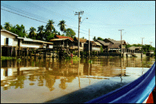
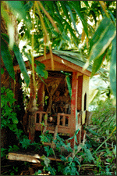

We went to there Chinatown and walked through an alley that is literally 3 miles of stalls. Then to another flower market. They have the most fragrant flowers there.
Then we took an express boat way up the river and they took another boat to tour a river that people have built homes on stilts and literally use the river as transportation, cleaning, food, etc....
|  | These are some of the homes on stilts on the river. |
| Every home or business has a spirit home. It is supposed to be nicer than the real building so that spirits will want to haunt these homes, to the real houses. Most are lovely and mass produced, this is one we saw on the river that is hand made. |  |
This is apparently a very ancient way of living in Thailand, and it makes sense. They go to the bathroom in their back yard gardens, which are communal. And use the river for everything else. Since it is a jungle and really HOT.... who would want to work to keep paths and everything else from overgrowing.
That night we took a train to Chaing Mai, the second largest town in Thailand (only 1/40th the population of Bangkok).
Thailand - Bangkok - Day 2 | Thailand - Bangkok to Chaing Mai - Day 4
{kind=link}
{kind=link}